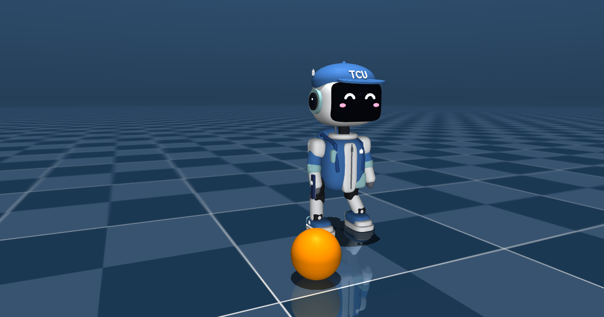

它是怎麼動的？
- 物理：MuJoCo 物理引擎（WebAssembly 版），每秒計算 200 次。
- 動作：機器人的走路、踢球等動作，是 Pollen Robotics MicroDuck 開源機器人用強化學習訓練出來的神經網路（每秒 50 次），用 onnxruntime-web 在你的裝置上執行。
- 身體：沿用 MicroDuck 的關節位置與重量數據；小慈的外觀是本專題自己設計的，不含 Pollen Robotics 的 3D 模型。
- 畫面：three.js。
全部在你的瀏覽器裡計算，不需要伺服器，也不會上傳任何資料。
隱私
本網站不收集個人資料、不使用追蹤或廣告。最佳紀錄、音效開關等設定只儲存在你自己的瀏覽器裡。
使用語音指令時，語音辨識由你的瀏覽器提供（部分瀏覽器會把聲音送到瀏覽器廠商的服務辨識）；本網站不會收到或保存你的聲音。
聲明
本網站是學生專題作品，不是慈濟大學或 Pollen Robotics 的官方網站或產品。
授權與致謝
| 項目 | 作者 | 授權 |
|---|---|---|
| MicroDuck 動作模型（microduck-policies，未修改） | Pollen Robotics | Apache-2.0 |
| 機器人關節與重量數據、控制方式（microduck_rl；本專題移除了原 3D 模型並換上自己的外觀與碰撞形狀） | Pollen Robotics | Apache-2.0 |
| MuJoCo 3.13.0 | Google DeepMind | Apache-2.0 |
| onnxruntime-web 1.29.0 | Microsoft | MIT |
| three.js r186 | three.js authors | MIT |
| qrcode-generator 1.4.4 | Kazuhiko Arase | MIT |